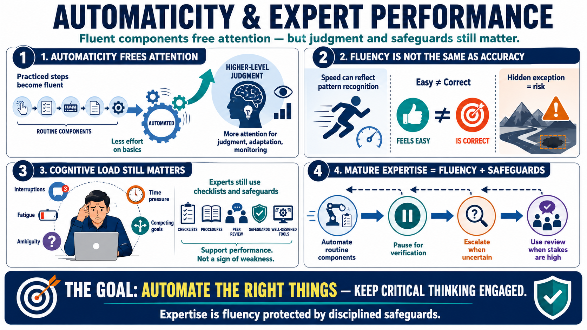

Automaticity, Attention, and Cognitive Load
Connecting to LMS... Progress: in progress

Narration
Automaticity is the ability to perform practiced components with reduced conscious effort. It matters because attention and working memory are limited. When basic elements of a skill become fluent, the expert has more attention available for higher-level judgment, adaptation, and monitoring. A skilled performer does not have to think through every tiny step with equal effort, which creates room for more complex decisions.
Fluency can be powerful, but it can also be misleading. When performance feels easy, people may assume it is correct. Ease is not the same as accuracy. An expert may move quickly because the situation fits a well-learned pattern, but that same speed can become risky if the environment changes or if an important exception is hidden. Automaticity should support judgment, not replace it.
Cognitive load still matters for experts. High-risk work often includes interruptions, fatigue, ambiguity, time pressure, and competing goals. Even skilled people can miss routine steps when memory is overloaded or the environment is noisy. That is why experts still use checklists, procedures, safeguards, peer review, and well-designed tools. These supports do not insult expertise; they protect it from predictable human limits.
The practical lesson is to automate the right things while keeping critical thinking engaged. Routine components should become efficient enough that they do not consume all attention. At the same time, the system should create pauses for verification, escalation, and review when the stakes are high or the pattern is uncertain. Mature expertise combines fluency with disciplined safeguards.